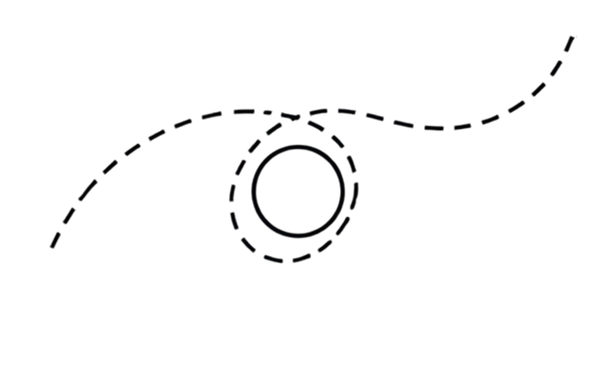

Leitura
Organizar eventos e corpus de linguagem para encontrar padrões, intervalos, sinais de ruptura e hipóteses testáveis.
Portfólio / Projeto 03 · Leea

Construção de uma agência de inteligência de retenção que cruza comportamento, linguagem e dados para desenhar agentes especializados, regras de CRM e intervenções calibradas por cliente.
O problema
Empresas acumulam eventos em CRM, produto, comunicação, suporte e billing, mas costumam ler cada fonte separadamente. O dashboard mostra a saída. A operação nem sempre consegue explicar quando a relação começou a se afastar.
A hipótese da Leea é que a trajetória precisa ser reconstruída: compra, abertura, clique, uso, suporte, silêncio e linguagem formam uma sequência. O valor está em cruzar essas marcas antes de escolher uma intervenção.
A proposta
Organizar eventos e corpus de linguagem para encontrar padrões, intervalos, sinais de ruptura e hipóteses testáveis.
Transformar a leitura em regras, agentes especializados, especificações de intervenção e tarefas de CRM.
Manter humano no loop, explicitar confiança, registrar decisões e limitar o que pode ir para produção.
Comparar tratamento e controle, revisar thresholds e devolver o resultado ao ciclo de melhoria.
Arquitetura do Sulco
Construção agêntica
A arquitetura foi desenhada como um conjunto de lentes especializadas e um núcleo de síntese. Cada componente lê uma dimensão da trajetória e entrega evidência para a próxima decisão.
Normaliza compras, aberturas, cliques, uso, suporte, pagamentos e cancelamentos. Depois lê intervalos, duração, silêncio e mudança de ritmo.
Leitura comercial, comunicação, comportamento, contexto e linguagem. A linguagem observa estrutura, gênero textual, vocabulário, registro e ritmo da interação.
Compara o cliente consigo mesmo, com a coorte, com o produto e com a etapa da jornada. Uma abertura perdida não vira risco universal.
Cruza sinais, registra conflitos, calcula risco ou oportunidade e escolhe observar, revisar, reter, expandir ou não agir.
Gera a especificação de ação, passa pelo portão humano, registra o resultado e revisa a régua com baseline e grupo de controle.
Tecnologia e trabalho
Usada para explorar hipóteses, estruturar linguagem, documentar agentes, sintetizar decisões e criar especificações com restrições.
HTML, CSS e JavaScript para construir a página e os protótipos. SQL e análise de dados entram como camada determinística da leitura.
Camada prevista de orquestração para agendar, buscar, transformar e encaminhar dados entre fontes, agentes e CRM.
Arquitetura da trajetória, especificação das lentes, política de decisão e intervenção, narrativa comercial e critérios de validação.
O que este projeto demonstra
Jornada, segmentação, lifecycle, risco, retenção, expansão, baseline, controle e métrica.
Definição de problema, ICP, oferta, critérios de entrada, governança e ordem de validação.
Uso de IA generativa como parceira de arquitetura, redação, prototipagem e codificação, sem terceirizar o critério.
Tradução entre linguagem de marca, decisão de negócio, agente, ferramenta, evento e operação.
Limites
Próximo passo
O próximo ciclo é conversar com líderes de CRM, lifecycle, retenção, marca e produto para testar a dor, o comprador, o primeiro caso de uso e a disposição de avançar para um diagnóstico pago.